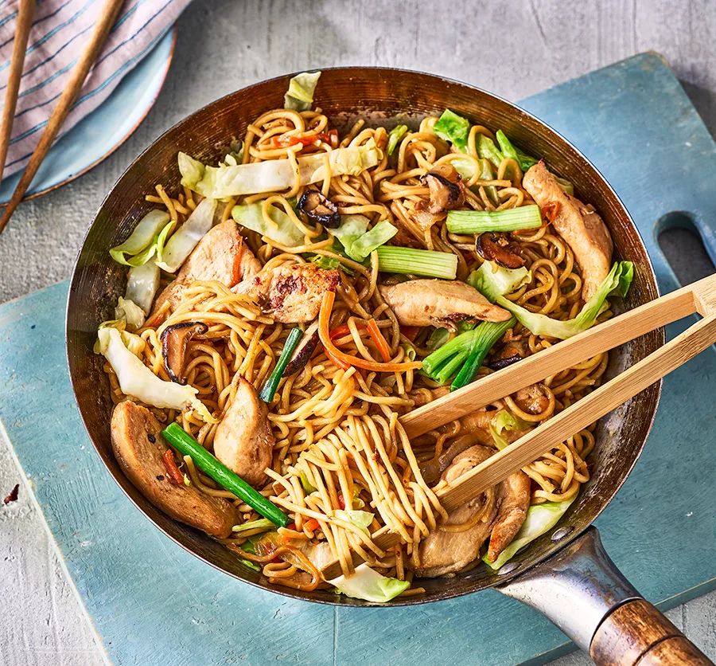

Chicken Chow Mein

Description
This Taiwanese-style chow mein uses a combination of stir-frying and steaming, so there's less oil involved. Pork would also work well instead of chicken
- 1 large skinless chicken breast (approx. 175g), sliced into 1cm-thick strips
- egg white
- 2-3 tbsp vegetable oil, plus 1 tsp for the marinade
- 1 shallot, finely chopped
- 4 garlic cloves, finely chopped
- ½ white onion (approx. 50g), thickly sliced
- 2 pieces dried shiitake mushrooms, rehydrated with ½ cup of warm water for 15 mins, then sliced into 1cm strips
- 1 carrot (approx. 80g), thickly sliced into ½ cm thick matchsticks
- 2 tbsp light soy sauce
- 1 tbsp cooking rice wine
- ½ tsp ground white pepper
- 1½ tsp chicken bouillon
- 1 tsp caster sugar
- 2 packs ready-cooked egg noodles (approx. 557g)
- ½ sweetheart cabbage (approx. 200g), thickly sliced
- 1 spring onion, cut into 2cm pieces
- 1 tbsp black vinegar or Worcestershire sauce
Steps
- Put the sliced chicken in a mixing bowl and add the egg white, 1 tsp salt and 1 tsp oil. Massage into the chicken to make sure it’s thoroughly coated. Set aside.
- Heat 2 tbsp vegetable oil in a large lidded wok or a deep frying pan set over a medium heat on your largest hob ring. Once the oil is slightly glistening, add the chopped shallot and stir until slightly golden in colour, about 3 mins. Add the chopped garlic and fry for 30 seconds.
- Still on medium heat, add the marinated chicken to the wok. Keep stir-frying until 70% of the chicken has changed from opaque to white. It doesn’t need to be fully cooked yet. If the chicken is sticking to the pan, add another 1 tbsp oil.
- Add the onion, mushrooms and carrots and toss with the chicken. Using two spatulas makes this easier. Stir-fry for another 30 seconds, on medium heat.
- Turn off the heat, then add the soy sauce, rice wine, white pepper, chicken bouillon, sugar and 150ml water. Stir gently then turn the heat back on to high.
- Add the egg noodles and, using tongs, gently toss for about 15 seconds to make sure they're thoroughly coated with the sauce. Add the cabbage on top of the noodles without mixing it in, put a lid on and let it steam for 30 seconds. Remove the lid, then mix the softened cabbage in with the noodles for about 10 seconds. Replace the lid and steam for another 30 seconds.
- Remove the lid and gently toss, being careful not to break the noodles. Add the chopped spring onion on top and splash in the 1 tbsp black vinegar or Worcestershire sauce on the wall of the wok, in a half circle motion. Give a final gentle toss to work in the spring onion. Serve straightaway on a platter.